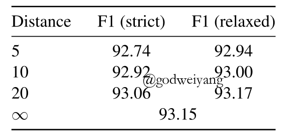

关注公众号【算法码上来】，每日算法干货马上就来！

论文地址：Constituency Parsing with a Self-Attentive Encoder
代码地址：github
今天要介绍的这篇论文是成分句法分析领域目前的state-of-the-art，结果最高的几篇paper可以参见ruder在github整理的列表：github。
下面就是成分句法分析目前排名：
| Model | F1 score | Paper / Source |
|---|---|---|
| Self-attentive encoder + ELMo (Kitaev and Klein, 2018) | 95.13 | Constituency Parsing with a Self-Attentive Encoder |
| Model combination (Fried et al., 2017) | 94.66 | Improving Neural Parsing by Disentangling Model Combination and Reranking Effects |
| In-order (Liu and Zhang, 2017) | 94.2 | In-Order Transition-based Constituent Parsing |
| Semi-supervised LSTM-LM (Choe and Charniak, 2016) | 93.8 | Parsing as Language Modeling |
| Stack-only RNNG (Kuncoro et al., 2017) | 93.6 | What Do Recurrent Neural Network Grammars Learn About Syntax? |
| RNN Grammar (Dyer et al., 2016) | 93.3 | Recurrent Neural Network Grammars |
| Transformer (Vaswani et al., 2017) | 92.7 | Attention Is All You Need |
| Semi-supervised LSTM (Vinyals et al., 2015) | 92.1 | Grammar as a Foreign Language |
| Self-trained parser (McClosky et al., 2006) | 92.1 | Effective Self-Training for Parsing |
摘要
本篇论文将之前A Minimal Span-Based Neural Constituency Parser这篇论文中模型的编码器部分由LSTM替换为了Self-Attentive，来捕捉句子单词内容(content)与位置(position)之间的联系。实验结果可以达到93.55%的F1值，如果再加上预训练的词向量ELMo，那么F1值可以提升到95.13%。这是目前效果最好的一个模型了。
Attention的主要想法借鉴了谷歌的神作：Attention Is All You Need，这篇论文网上也有很多讲解了，我挑选了一篇讲解比较好的，大家可以先看看：Attention Is All You Need。
模型
基本模型
这部分详见我之前写的一篇笔记：A Minimal Span-Based Neural Constituency Parser，解码器部分和之前模型基本一致。本文主要探讨的是编码器的构造，也就是如何求出每个span的向量表示，从而得到span的得分$s(i,j,l)$，然后应用解码器进行解码，生成成分句法分析树。
词向量表示
第$t$个单词的词向量由三个部分组成：
- word embdding：$w_t$，这部分可以用随机初始化的向量，也可以用CharLSTM，也可以用预训练的词向量。
- tag embdding：$m_t$
- 位置向量：$p_t$
最终词向量为三部分的加和：
\[z_t = w_t + m_t + p_t\]
Self-Attentive
模型结构如下图所示：
这一部分是不同位置单词互相联系的唯一方式，采用谷歌Attention Is All You Need中的Self-Attentive模型。
模型一共由8个SingleHead组成，每个SingleHead结构如下图：
计算方式如下：
\[{\rm{SingleHead}}(X) = \left[ { {\rm{Softmax}}\left( {\frac{ {Q{K^{\rm{T}}}}}{ {\sqrt { {d_k}} }}} \right)V} \right]{W_o}\]
其中$Q = X{W_Q};K = X{W_K};V = X{W_V}$，而$W_O$用来将输出映射到与输入相同的维度。
详细分析一下计算过程，首先输入矩阵$X = [{z_1},{z_2}, \ldots ,{z_T}]$是由一个句子中所有词向量组成的矩阵，拼接在一起是为了并行，加快计算速度，$X \in {\mathbb{R}^{T \times {d_{ {model}}}}}$。
然后将$X$映射为三个矩阵，query矩阵$Q$，key矩阵$K$，value矩阵$V$，其中$Q,K \in {\mathbb{R}^{ {d_{ {model}}} \times {d_k}}}$。
我们想要计算单词$i$和单词$j$之间的Attention大小，可以用两者query向量和key向量元素乘得到：
\[p(i \to j) \propto \exp \left( {\frac{ { {q_i} \cdot {k_j}}}{ {\sqrt { {d_k}} }}} \right)\]
所有单词的value向量乘以单词$i$对它的Attention值，加权求和之后得到的结果就是单词$i$最后的向量表示：
\[{ {\bar v}_i} = \sum\nolimits_j {p(i \to j){v_j}} \]
最后乘以$W_O$映射到与输入$X$相同的维度。
整个过程如果写成矩阵形式就是最开始的那个矩阵式子。注意到式子中$Q{K^{\rm{T}}} \in {\mathbb{R}^{ {\rm{T \times T}}}}$，矩阵中的每个元素恰好就是Attention值$p(i \to j)$。$\sqrt { {d_k}}$是归一化因子。
最后将8个SingleHead的结果求和得到MultiHead结果，注意这8个SingleHead参数不共享：
\[{\rm{MultiHead(}}X) = \sum\limits_{i = 1}^8 { {\rm{SingleHea}}{ {\rm{d}}^{(i)}}(X)} \]
注意到Attention模型有一个很严重的问题，就是无论单词的顺序是怎么样的，都不影响最终的结果。所以在输入中要添加位置向量$p_t$，否则之后会有实验表明，不加的话效果大大下降。
图一中还有一个前馈神经网络的部分，使用的是一个双层前馈神经网络：
\[{\rm{FeedForward}}(x) = {W_2}{\rm{relu}}({W_1}x + {b_1}) + {b_2}\]
Span得分
最终的span得分计算方式如下：
\[s(i,j, \cdot ) = {M_2}{\rm{relu}}({\rm{LayerNorm}}({M_1}v + {c_1})) + {c_2}\]
其中$v$就是短语的向量表示，由之前的每个单词的向量输出得到：
\[v = [{ {\vec y}_j} - { {\vec y}_i},{ {\mathord{\buildrel{\lower3pt\hbox{$\scriptscriptstyle\leftarrow$}} \over y} }_{j + 1}} - { {\mathord{\buildrel{\lower3pt\hbox{$\scriptscriptstyle\leftarrow$}} \over y} }_{i + 1}}]\]
在之前的LSTM模型中前向后向表示很容易得到，在这里只能通过将输出向量一分为二，一半作为前向表示，一半作为后向表示，实际实现中，偶数维度作为前向表示，奇数维度作为后向表示。
模型分析
Content vs Position Attention
之前的模型中，我们采用元素加将三个输入向量求和作为输入，期待模型自己训练出它们之间的权重，将它们很好地分开，但是实际上效果并不好。
下面论文做了许多实验来探讨content和position的重要性。
首先修改模型输入，令$Q=PW_Q,K=PW_K$，也就是丢弃了content信息，但是最后结果只下降了0.27个百分点，说明了content信息对模型影响不是很大。
然后为了验证是不是元素加导致content和position信息混合在一起模型无法分开，实验将输入向量显示分开，输入改为
\[z_t=[w_t+m_t;p_t]\]
但是实验结果只下降了0.07个百分点，说明不是这个因素导致的。事实上元素加和拼接操作在高维度上面是相似的，特别是之后立即乘上了一个矩阵，这就会混合里面的信息。
所以最好的解决办法就是将content和position向量分开计算attention，最后求和。这样attention矩阵就可以表示为：
\[QK^{\rm{T}} = {Q_c}K_c^{\rm{T}} + {Q_p}K_p^{\rm{T}}\]
这时的权重矩阵$W$就可以写为
\[W = \left[ {\begin{array}{*{20}{c}}{ {W_c}}&0\\0&{ {W_p}}\end{array}} \right]\]
通过将content和position信息分开，模型的效果从92.67%提升到了93.15%，模型示意图如下：
最后的实验在测试阶段的8层模型中，每一层手动选择采不采用content或者position attention，实验结果如下：
可以发现，不用position信息的话结果大大下降，接近传统的CKY算法，这也说明了普通的CKY算法是无法捕捉到全局的信息的。还有就是content信息主要作用在最后几层，这也说明了前面几层有点类似于扩张卷积网络。
窗口Attention
这一部分也不是什么新鲜玩意了，谷歌的论文中也有提到，主要思想就是限制attention的范围，每个单词只与周围窗口大小内的单词进行计算。在本文中还提出一个relaxed变体，就是除了窗口大小范围外，再加入首尾各两个单词进行attention操作。
如果只在测试阶段进行窗口attention的话，实验结果如下：
可以看出，首尾的4个单词对模型效果有很大的影响，如果加上的话，即使窗口很小，效果下降也不会很多。
然后如果训练和测试阶段都采用窗口attention，结果如下：

这时结果下降反而不是很明显了，其实模型的8层就类似于卷积操作，假设窗口大小为10，那么经过8层计算之后，窗口其实可以覆盖到长度为80的句子，这已经足够了，所以性能没有下降太多不足为奇。
模型的一些改进
Subword Features
可以尝试加入CharLSTM来代替随机初始化的tag embdding，并且可以直接删除随机初始化的word embdding，只保留tag embdding和位置向量，效果反而能有提升。
受到其他工作的启发，还可以将每个单词的前后各8个字符向量拼接起来作为输入，但是实验结果不如CharLSTM。
上面的实验结果如下图所示：
可以看出，采用CharLSTM输出作为tag embdding，并且不采用word embdding的效果最好。
外部词向量
如果采用另一项关于词向量的工作成果ELMo，将其预训练的结果作为word embdding，实验结果可以更高。因为该词向量已经很好的学习到了全局的信息，所以模型可以减少到4层，效果比8层更好，结果如下：
F1值大大提高，达到了惊人的95.21%。
实验结果
在PTB数据集上，无论是单模型还是多模型或者加入外部词向量，本文的模型结果都是近来最好的，单模型93.55%，多模型95.13%，对比结果如下：
本文开头已经提到了最高的几个排名，大家可以去看看其他的方法学习学习。
总结
之前的工作大多数围绕解码器的算法优化，但是本文对编码器进行了改进，使其能更好的捕捉全局信息。
同时提出了几点重要的改进：
- subword的信息（CharLSTM）和预训练的词向量非常重要。
- 将content和position信息分开可以提升实验结果。
同时在阅读Attention Is All You Need的同时，我也发现了谷歌的attention模型其实还是有很多问题的，例如模型本身无法捕捉位置信息，需要加入position embdding来表示位置信息，但这只是临时应付措施，今后工作可以探讨更好的解决方案。